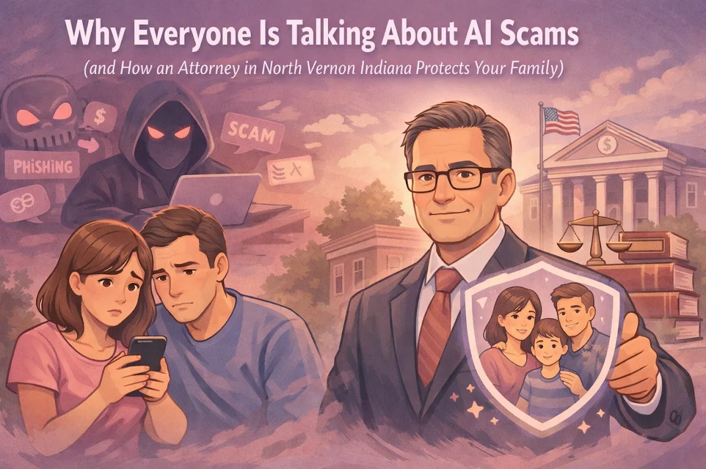

Why Everyone Is Talking About AI Scams (and How an Attorney in Vernon, Indiana Protects Your Family)

If you've been scrolling through the news lately or chatting with neighbors, you've probably heard some pretty wild stories about Artificial Intelligence (AI). It seems like every day there's a new headline about how technology is changing the world. But here in North Vernon, we tend to care more about what's happening on our own porches and in our own living rooms.
Unfortunately, by March 2026, the digital world has knocked on our front doors in a way that's a bit unsettling. AI isn't just for sci-fi movies anymore; it's being used by scammers to target families right here in Jennings County. As a lawyer in Vernon, Indiana, I've seen how these digital threats can turn a peaceful afternoon into a legal and financial nightmare.
I'm Chris Doran, and at Chris Doran Law LLC, I believe in keeping things straightforward. I'm a small-town lawyer who wears many hats, and these days, one of those hats involves helping my neighbors protect themselves from high-tech fraud. Let's talk about what's actually happening out there and how we can keep your family safe.
The Reality of AI Scams in 2026
We used to worry about "Prince" emails asking for wire transfers. Those were easy to spot because of the bad grammar and outlandish stories. But in 2026, the scams have become much more sophisticated. Scammers are now using "Generative AI" to create content that looks and sounds exactly like the people you love.
The two biggest threats we are seeing right now are voice cloning and deepfakes.
Voice Cloning: The "Grandchild in Trouble" Scam 2.0. Imagine your phone rings. It's a number you don't recognize, but when you answer, you hear your grandson's voice. He sounds frantic. He tells you he's been in a car accident near Hayden or got picked up by police while traveling, and he needs money for bail or repairs immediately. He sounds exactly like himself, the same pitch, the same "ums" and "ahs," the same way he calls you "Nana."
In reality, that isn't your grandson. A scammer took a 30-second clip of his voice from a social media video and used AI to clone it. They can now type anything into a computer, and it will speak in his voice. This isn't just theory; it's happening across the country, and it's starting to hit home here in Indiana.
Deepfakes and Video Fraud. It isn't just audio anymore. Deepfake technology allows scammers to superimpose a loved one's face onto another person's body in a video call. You might think you're FaceTime-ing with a family member in distress, but it's a digital mask. These "all-green" frauds are designed to bypass your natural skepticism by using the ultimate weapon: your affection for your family.
The Indiana Consumer Data Protection Act: Your New Shield
There is some good news. As of January 1, 2026, the Indiana Consumer Data Protection Act is officially in full effect. This is a big deal for us Hoosiers. It gives you more control over your personal data and how companies use it.
As an attorney in Vernon, Indiana, I've been studying this law closely. It requires companies to be much more transparent about the data they collect. If a scammer gets a hold of your voice or image because a company didn't secure your data properly, this law provides a framework for holding them accountable. It also gives you the right to tell companies to delete your data, which can help "starve" the AI models that scammers use to build their clones.
However, laws are often reactive. They help after something goes wrong. To stay safe in the moment, we need a proactive plan.
Proactive Steps Every Jennings County Family Should Take
You don't need to be a tech genius to protect your family. You just need a few "old school" tricks mixed with modern legal protections.
1. Establish a Family Verification Code. This is the simplest and most effective tool you have. Sit down with your family in North Vernon, Vernon, or Commiskey and decide on a "secret word" or phrase. If anyone in the family calls claiming to be in an emergency and asks for money, the first thing you do is ask for the code. If they can't give it to you, hang up immediately. An AI can clone a voice, but it can't read your mind.
2. Update Your Power of Attorney (POA). Many people have a Power of Attorney they signed ten or twenty years ago. Back then, "digital assets" weren't really a thing. Today, your POA needs to specifically address digital exploitation and AI.
By working with a lawyer in Jennings County, you can update your documents to ensure that if you are ever targeted by a scam and lose your ability to manage your affairs, someone you trust has the legal authority to step in, freeze accounts, and deal with the tech companies on your behalf.
3. Review Your Estate Plan. Protecting your legacy means more than just deciding who gets the house or the farm. It's about protecting your digital likeness. In 2026, we have to consider what happens to our digital presence after we're gone. Could a scammer use your old videos to create a deepfake and scam your heirs? Updated estate plans can include "digital executor" clauses that give your family the right to manage or delete your online footprint.
How Chris Doran Law LLC Can Help
I've always said that my job is to listen to what you have to say and give you options. Whether you're in Scipio or Hayden, you deserve a lawyer who understands the local community but keeps an eye on the bigger picture.
When it comes to AI scams and digital protection, I help families by:
Proactive Planning. We can sit down and look at your current estate plan and Power of Attorney. I'll help you spot the "holes" where a digital scammer might slip through.
Legal Fallout. If you or a loved one has already been a victim of a scam, I can help you navigate the aftermath. This includes dealing with banks that might be hesitant to refund money and looking at options under the Indiana Consumer Data Protection Act.
Small-Town Accessibility. You don't have to drive to Indy to get high-level legal advice. I'm right here in Vernon. I don't charge travel fees for local matters because I believe in being honest and transparent with my neighbors.
Don't Wait for a Phone Call to Act
The rise of AI is moving fast. In 2025, we saw a massive jump in financial losses due to these scams, and 2026 is on track to be even more challenging. But being informed is half the battle.
If you're worried about how these technologies might affect your parents, your kids, or your business, let's talk. I handle a wide variety of complex legal matters, and I'm here to make sure you have the protections you need.
Whether you need a lawyer in Vernon for a quick document review or a more complex situation, my door is open. We can't stop the world from changing, but we can certainly make sure Jennings County families are prepared for it.
Practical Checklist for Digital Safety
Privacy Settings. Check your social media. If your profile is public, anyone can download your videos to clone your voice.
Verify Identity. If a "bank" calls you, hang up and call the official number on the back of your card.
Consult a Professional. Make sure your legal documents are up to date with 2026 standards.
If you have questions about protecting your assets or updating your family's legal protections, feel free to reach out. I'm here to help with your legal needs, no-nonsense and straightforward.
Let's work together to keep your family's future secure, no matter how much the technology changes.